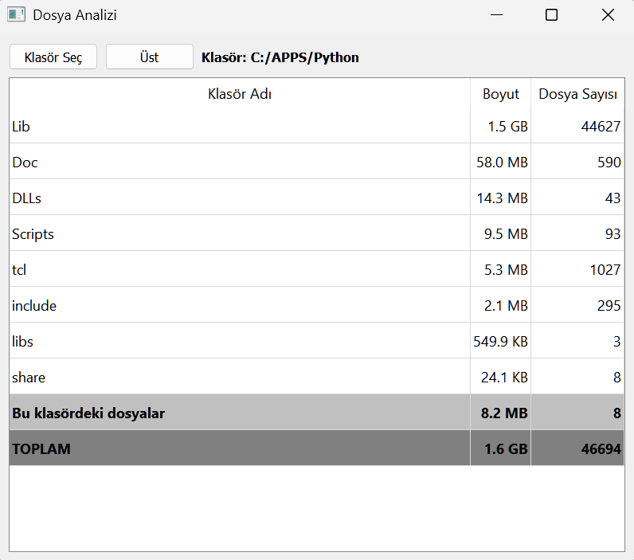

🕐 Zamanlayıcı Uygulaması - Kullanım Kılavuzu
📋 Genel Bakış
Bu zamanlayıcı uygulaması, birden fazla zamanlayıcıyı ve hatırlatıcıyı aynı anda çalıştırmanıza, tekrarlayan alarmlar
ayarlamanıza ve favori zamanlayıcılarınızı yönetmenize olanak tanıyan gelişmiş bir araçtır. Program kapatılıp tekrar
açıldığında, devam etmekte olan zamanlayıcının kalan süresi hesaplanır, tamamlananlar ekran sağ alt köşesinde gösterilir,
halen devam edenler otomatik olarak başlar. Periyodik, belli bir zamnda başlayan, istenilen miktarda tekrar eden
zamanlayıcılar oluşturabilir, geçmişteki zamanlayıcıları inceleyebilir ve favori ayarlarınızı kaydedebilirsiniz.
| Zamanlayıcı |
Yeni Zamanlayıcı |
Yeni Hatırlatıcı |

|

|

|
🚀 Ana Özellikler
✨ Yeni Zamanlayıcı Oluşturma
- Dakika Ayarı: 1-180 dakika arası zamanlayıcı kurabilirsiniz
- Açıklama: Her zamanlayıcı için özel açıklama ekleyebilirsiniz
- Alarm Zamanı Belirleme: Belirli bir saatte çalacak alarm kurabilirsiniz (İlk alarm için)
- Alarm Sesi Seçimi: Farklı alarm seslerini seçebilir ve önizleyebilirsiniz.
İstediğiniz yeni alarm sesini MP3 formatında ekleyebilirsiniz
- Tekrar Sayısı: 1-99 arası tekrar sayısı belirleyebilirsiniz
- Tekrar Aralığı: Tekrarlar arası 0-180 dakika bekleme süresi ayarlayabilirsiniz
🔄 Aktif Zamanlayıcı Yönetimi
- Çoklu Zamanlayıcı: Aynı anda birden fazla zamanlayıcı çalıştırabilirsiniz
- Gerçek Zamanlı Güncelleme: Kalan süre her saniye güncellenir
- Durdurma: İstediğiniz zaman zamanlayıcıyı durdurabilirsiniz
- Çift Tık Düzenleme: Aktif zamanlayıcıya çift tıklayarak ayarlarını değiştirebilirsiniz
- Süre Ayarlama: "⏱️ Süre Ayarla" düğmesiyle çalışan zamanlayıcının kalan süresini değiştirebilirsiniz
- Erken Tamamlama: "✅ Tamamlandı" düğmesiyle zamanlayıcıyı hemen sonlandırarak
(tekrarlı ise) bir sonrakine geçmesini sağlayabilirsiniz)
- Tekrar Bilgisi: Tekrarlayan alarmlarda kaçıncı tekrarda olduğunuz gösterilir
⏱️ Süre Ayarlama
- Özel Süre Belirleme: İstediğiniz dakika değerini manuel olarak girebilirsiniz
- Kesintisiz Ayarlama: Zamanlayıcıyı durdurmadan süreyi değiştirebilirsiniz
- Hızlı Süre Ekleme: Çalışan zamanlayıcıya ilave süre (mesela ek 10 dakika) ekleyebilirsiniz
- Süre Kısaltma: Negatif değer girerek (örn. -5) kalan süreyi azaltabilirsiniz
- Süreyi Sıfırlama: Süreyi 0 olarak ayarlayarak zamanlayıcıyı hemen sonlandırabilirsiniz
✅ Zamanlayıcı Tamamlama
- Erken Tamamlama: "Tamamlandı" düğmesi ile zamanlayıcıyı süresi dolmadan bitirebilirsiniz
- Alarm Tetikleme: Erken tamamlama, alarm sesini normal tamamlanma gibi çalar
- Geçmişe Kaydetme: Tamamlanan zamanlayıcı otomatik olarak geçmiş listesine eklenir
- Tekrar Yönetimi: Tekrarlı zamanlayıcılarda, bir sonraki tekrar planlandığı gibi başlatılır
- Toplu Tamamlama: İhtiyaç duyulduğunda birden fazla zamanlayıcıyı tek tek tamamlayabilirsiniz
⭐ FAVORİ SİSTEMİ
Sık kullandığınız zamanlayıcı ayarlarını favori olarak kaydedebilirsiniz:
- Favoriye ekleme: Geçmiş listesinde sağ tık → "Favorilere Ekle"
- Favoriyi başlatma: Favori listesinde çift tıklama
- Favori düzenleme: Favori listesinde sağ tık → "Favoriyi Düzenle"
- Favori silme: Çoklu seçim yap → "Seçilen Favorileri Sil" butonu
📌 Favori Ekleme
- Geçmişten Favori: Geçmiş listesinde herhangi bir zamanlayıcıya sağ tıklayıp "Favorilere Ekle" seçeneğini kullanın
- Aynı Favori Kontrolü: Aynı ayarlarda favori zaten varsa uyarı alırsınız
- Otomatik Kaydetme: Favoriler otomatik olarak kaydedilir ve program yeniden açıldığında yüklenir
🎯 Favori Kullanma
- Hızlı Başlatma: Favori listesinde herhangi bir zamanlayıcıya çift tıklayarak hemen başlatabilirsiniz
- Favori Düzenleme: Favori listesinde sağ tıklayıp "Favoriyi Düzenle" ile ayarları değiştirebilirsiniz
- Toplu Silme: Birden fazla favoriyi seçip toplu olarak silebilirsiniz
⭐ LOG SİSTEMİ
📋 Log İzleme
- Erişim: "Araçlar > Log'ları Göster" menüsünden veya
Ctrl+L kısayoluyla açabilirsiniz
- Tarih ve Zaman: Her log kaydı, oluşturulma tarih ve saatiyle birlikte görüntülenir.
Milisaniye detaylarının gösterilmesi, yüksek hızlı makinalarda dahi hangi sırayla işlemlerin gerçekleştiğini takip edebilmeye olanak sağlar
- Seviye Bilgisi: Loglar önem seviyesine göre (DEBUG, INFO, WARNING, ERROR, CRITICAL) gösterilir ve gruplanabilir
- Metin Filtreleme: Arama kutusu ile belirli log kayıtlarını filtreleyebilirsiniz
- Sıralama: Log kayıtlarını harf sırasına (dolayısıyla tarih sırasına) göre sıralayabilirsiniz
🔍 Log Dosyası İşlemleri
- Kaydet: Görüntülenen log kayıtlarını güncelleyerek kaydedebilirsiniz
- Kopyala: Seçilen log kayıtlarını panoya kopyalayabilirsiniz
- Dosya Konumu: Log dosyaları
timer-data/ klasöründe saklanır
Log Penceresi
Uygulamanın çalışması sırasında meydana gelen tüm önemli olaylar (zamanlayıcı başlatma, tamamlanma, hatalar vb.) bir log dosyasına kaydedilir.
Araçlar > Log'ları Göster menüsünü (kısayol: Ctrl+L) kullanarak bu kayıtları inceleyebilirsiniz.
Log Görüntüleyici penceresi, özellikle başlayan bir alarmın sürecini izlemek ya da biten benzer alarmlar ile ilgili istatistiksel analiz yapmak için çok kullanışlıdır.
Bu pencerenin en güçlü özelliği, üst kısmında yer alan arama kutusudur. Bu arama kutusu, binlerce satır arasından aradığınız bilgiye hızla ulaşmanızı sağlayan gelişmiş filtreleme yeteneklerine sahiptir.
Gelişmiş Arama Özellikleri
Arama yaparken aşağıdaki kuralları kullanarak filtrelerinizi daha hassas hale getirebilirsiniz:
-
Büyük/Küçük Harf Duyarsız Arama: Arama yaparken büyük veya küçük harf kullanmanız fark etmez.
Örneğin,
HATA, hata veya HaTa yazmanız aynı sonuçları getirecektir.
-
Türkçe Karakter Desteği: Arama, Türkçe karakterlere (
ç, ğ, ı, ö, ş, ü) ve onların Latin alfabelerindeki karşılıklarına (c, g, i, o, s, u) desteğe sahiptir.
Bu sayede, yapıldı ve YAPILDI veya yaPILdı aramaları aynı sonuçları listeler.
-
Dahil Etme (+) ve Hariç Tutma (-): Arama terimlerinizin başına
+ veya - işareti koyarak sonuçları daraltabilirsiniz.
-
+ (VE): Kelimelerin arasında + olması, o kelimelerin log satırında mutlaka bulunması
gerektiğini belirtir.
Birden fazla +'lı terim kullanmak, tüm terimleri içeren satırları getirir.
-
Örnek:hatırlatıcı+yapıldı ➡️ hem "hatırlatıcı" hem de "yapıldı" kelimelerini içeren log satırlarını listeler.
- (DEĞİL): Bir kelimeden önce - olması, o kelimenin log satırında bulunmaması gerektiğini belirtir.-
Örnek:hatırlatıcı - yapılmayacak ➡️ "hatırlatıcı" kelimesinin bulunduğu ancak "yapılmayacak" kelimesini içermeyen log satırlarını listeler.
Arama Örnekleri
| Arama Sorgusu |
Açıklama |
hatırlatıcı |
İçinde "hatırlatıcı" kelimesi geçen tüm logları listeler. |
zamanlayıcı + tamamlandı |
İçinde hem "zamanlayıcı" hem de "tamamlandı" kelimeleri geçen logları bulur. (Örn: Zamanlayıcı 352 - 'Pazartesi Değerlendirme Toplantısı' tamamlandı) |
zamanlayıcı - başlatılacak |
İçinde "zamanlayıcı" kelimesi geçen ama "başlatılacak" kelimesi geçmeyen tüm logları gösterir. Bu, "başlatılacak, güncellendi" gibi ara bildirimleri göstermemek için çok kullanışlıdır. |
zamanlayıcı + toplantı - durduruldu |
"toplantı" ile ilgili çalan ama manuel olarak durdurulmamış alarmlara ait tüm logları listeler. |
💡 İpucu: Log kayıtları, program sorunlarını çözmede yardımcı olabilir. Bir hatayla karşılaştığınızda log kayıtlarını incelemek, sorunun kaynağını bulmanıza yardımcı olacaktır.
⌨️ KLAVYE KISAYOLLARI
🔥 Hızlı Erişim Tuşları
- F Tuşu: Favori listesini açar/kapatır
- G Tuşu: Geçmiş listesini açar/kapatır
- ESC Tuşu: Açık olan paneli (favori veya geçmiş) kapatır
🚀 Program Kontrolleri
- Ctrl+T: Yeni zamanlayıcı oluşturur
- Ctrl+R: Yeni hatırlatıcı oluşturur
- F1: Yardım penceresini açar
- Alt+F4: Programı kapatır (ayarlar otomatik kaydedilir)
🧩 Araçlar ve Oyunlar
- Ctrl+A: Dosya analizi aracını açar
- Ctrl+L: Log kayıtlarını görüntüler
- Ctrl+S: Sudoku oyununu açar
- Ctrl+E: Tetris oyununu açar
💡 İpucu: Klavye kısayolları sayesinde fare kullanmadan hızlıca program özelliklerine erişebilirsiniz! Kısayolları ezberlemek, zamanlayıcı uygulamasını çok daha verimli kullanmanızı sağlar.
📊 Geçmiş ve Kayıtlar
📈 Zamanlayıcı Geçmişi Panosu
- Otomatik Kayıt: Tamamlanan tüm zamanlayıcılar otomatik olarak geçmişe kaydedilir
- Detaylı Bilgi: Tarih, süre, açıklama, alarm türü ve tekrar bilgileri gösterilir
- Yeniden Başlatma: Geçmişteki herhangi bir zamanlayıcıya çift tıklayarak yeniden başlatabilirsiniz
- Seçerek Silme: İstemediğiniz kayıtları seçerek silebilirsiniz
- Çoklu silme: Ctrl ile kayıtlar tıklayarak tek tek seçimden sonra ya da Shift ile bir gruba tıklayıp çoklu seçim yaparak, "Seçilen Geçmişi Sil" tuşuna basınız
- Program kapalıyken tamamlanan: "(Program kapalıyken tamamlandı)" etiketi
- Sağ Tık Menüsü: Geçmiş kayıtlarına sağ tıklayıp favorilere ekleyebilirsiniz
💾 Otomatik Kaydetme
📈 Otomatik Kaydetme
- Tüm zamanlayıcı durumları otomatik olarak kaydedilir
- Program kapatılıp açıldığında kalan sürelerle devam eder
- Program kapalıyken geçen süre otomatik olarak hesaplanır
- Veriler
timer-data/zamanlayici_ayarlar.json dosyasında saklanır
🔊 Alarm Sistemi
🎵 Alarm Özellikleri
- Çoklu Alarm Dosyası: Program
timer-data klasöründeki alarm*.mp3 dosyalarını kullanır
- Özel Alarm Ekleme: İsmi "alarm" ile başlayan mp3 dosyalarını ekleyerek kendi alarmlarınızı programa tanıtabilirsiniz
- Önizleme: Zamanlayıcı ayarlarken alarm sesini dinleyebilirsiniz
- Döngüsel Çalma: Alarm sesi kapatılana kadar tekrar eder. Alarmı onaylamadan alarmı sessiz hale getirebilirsiniz
- Dosya Yedekleme: Alarm dosyası bulunamazsa varsayılan alarm (alarm-01.mp3) kullanılır
✨ NLP
✨ NLP ile Hatırlatıcı Oluşturma
-
Doğal Dil Desteği: Hatırlatıcı eklerken karmaşık ayarlarla uğraşmadan, günlük konuşma dilinde komutlar yazabilirsiniz.
-
Otomatik Zaman Algılama: Program, yazdığınız cümledeki tarih, saat, tekrar ve süre bilgilerini otomatik olarak algılar.
-
Tekrar ve Özel Saat: "Her gün saat 09:00'da su iç", "5 dakika sonra Youtube seyret", "Her cuma saat 17:00'de haftalık raporu gönder" gibi tekrarlı veya tek seferlik hatırlatıcılar oluşturabilirsiniz.
-
Desteklenen Komut Örnekleri:
5 dakika sonra alarm kurHer gün saat 12:00'de ara öğün yap5 dakika sonra Youtube seyret2 gün sonra yürüyüşe çık3 saat sonra çimleri sulaHer 3 günde bir saat 12:00'da toplantı yap
-
Kullanım: Ana ekrandaki Doğal dilde hatırlatıcı girin alanına komutunuzu yazıp NLP ile Hatırlatıcı Oluştur butonuna tıklayın.
-
Not: Komutunuzun anlaşılır ve açık olmasına dikkat edin. Program, Türkçe dilinde tarih ve saat ifadelerini tanıyacak şekilde geliştirilmiştir.
⚙️ Gelişmiş Özellikler
🕐 Özel Saat Ayarı
- Belirli Saat: "Alarm Zamanı Belirle" seçeneği ile zamanlayıcıyı belirli bir saatte çalacak şekilde ayarlayabilirsiniz
- Otomatik Hesaplama: Mevcut zamandan hedef saate kadar kalan süre otomatik hesaplanır
- Ertesi Gün Desteği: Hedef saat geçmişse otomatik olarak ertesi güne ayarlanır
- Favori Düzenlemede: Favorileri düzenlerken özel saat ayarı dahil tüm hatırlatıcı bilgilerini değiştirebilirsiniz
🔄 Tekrar Sistemi
- Çoklu Tekrar: Bir zamanlayıcının 1-99 kez tekrarlanmasını sağlayabilirsiniz
- Aralık Ayarı: Tekrarlar arası bekleme süresi ayarlayabilirsiniz
- Tekrar Takibi: Kaçıncı tekrarda olduğunuz ekranda ve terminalde görüntülenir, ayrıca log kayıtlarında yer alır
- Otomatik Başlatma: Her tekrar belirtilen aralık sonunda otomatik başlar
💾 Veri Yönetimi
🗂️ Otomatik Kaydetme
- Sürekli Kayıt: Tüm ayarlar ve aktif zamanlayıcılar otomatik kaydedilir
- Program Kurtarma: Program kapanıp açıldığında aktif zamanlayıcılar kaldığı yerden devam eder
- Favori Kalıcılığı: Favoriler JSON dosyasında saklanır ve her açılışta yüklenir
- Geçmiş Saklama: Tüm işlemler
zamanlayici_log.txt dosyasında saklanır
🎮 Ek Araçlar
📁 Dosya Analizi
| Dosya Analizi |
Özellikler |
|

|
- Dosya Analizi: Seçilen klasörlerin boyutunu ve dosya sayısını analiz eder
- Alt Klasörler: Alt klasörlerin boyutlarını ayrı ayrı gösterir
- Navigasyon: Klasörler arası kolayca gezinebilirsiniz
|
🎲 Oyunlar
- Sudoku: Farklı zorluk seviyeleri ile sudoku oynayabilirsiniz
- Tetris: Klasik tetris oyunu
🔧 Teknik Gereksinimler
📦 Gerekli Kütüphaneler
pip install PyQt5 (PyQt5=5.15.11)pip install dateparser (dateparser=1.2.2)- Python 3.13.2 veya üzeri
📂 Dosya Yapısı
- timer-data/: Alarm dosyaları ve ayarların saklandığı klasör
- alarm*.mp3: timer-data klasöründeki alarm ses dosyaları
- zamanlayici_ayarlar.json: Zamanlayıcılar, hatırlatıcılar ve programın çalışmasında kullanılan tüm ayarlar
- zamanlayici_log.txt: Log kayıtları
🛠️ Sorun Giderme
⚠️ Yaygın Sorunlar
- Alarm Çalmıyor: timer-data klasöründe alarm-01.mp3 dosyasının varlığını kontrol edin
- Ayarlar Kayboldu: zamanlayici_ayarlar.json dosyasının varlığını ve erişim iznini kontrol edin
- Program Çöküyor: PyQt5 kütüphanesinin doğru yüklendiğinden emin olun
🔄 Güncelleme Geçmişi
📅 Son Güncellemeler
- Favori Sistemi: Geçmişten favori ekleme ve yönetim sistemi
- Favori Düzenleme: Mevcut favorilerin ayarlarını değiştirme özelliği
- Klavye Kısayolları: F, G ve ESC tuşları ile hızlı navigasyon
- Sağ Tık Menüleri: Geçmiş ve favori listelerinde bağlam menüleri
- Çift Tık Düzenleme: Aktif zamanlayıcıları çift tıkla düzenleme
- Gelişmiş Veri Yönetimi: Daha güvenilir kaydetme ve yükleme sistemi
📞 Destek
💡 İpucu: Bu uygulama açık kaynak kodludur. Kod içindeki yorumları inceleyerek daha detaylı bilgi alabilirsiniz.
🎯 Kullanım İpuçları:
- Sık kullandığınız zamanlayıcıları favorilere ekleyerek hızlı erişim sağlayın
- Klavye kısayollarını kullanarak daha verimli çalışın
- Tekrarlayan görevler için tekrar sayısı ve aralığı özelliklerini kullanın
- Farklı zamanlayıcılar için farklı alarm sesleri seçerek karışıklığı önleyin
Bu dokümantasyon Zamanlayıcı Uygulaması v2.0 için hazırlanmıştır.